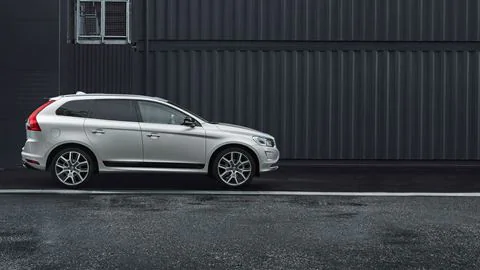
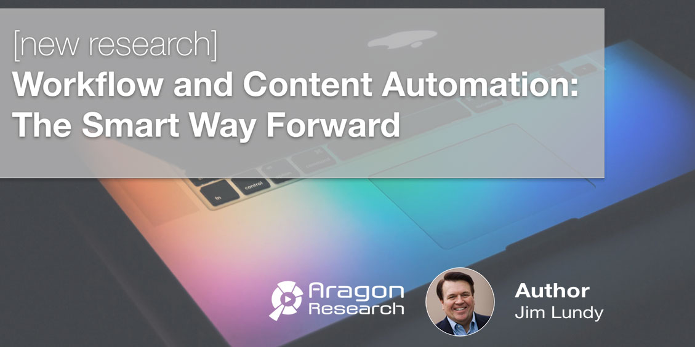
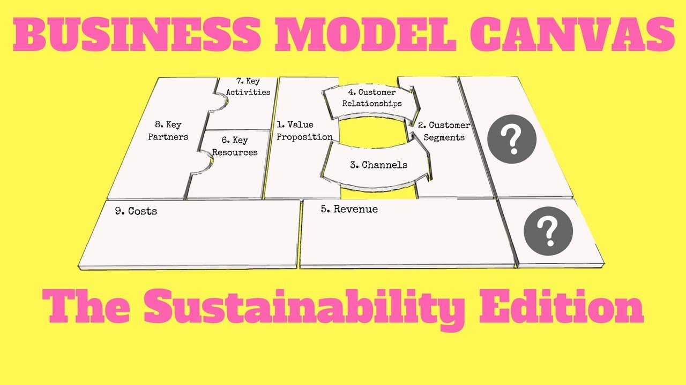
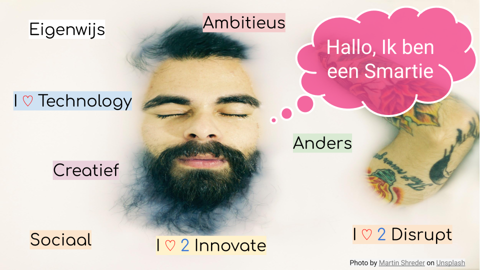

LES-1
1. belangrijkste leerpunten:
-via Google scholar kom je op betrouwbare bronnen uit in plaats van bijvoorbeeld websites die artikels schrijven van bestaande bronnen
-PDF bestanden downloaden als je op schoolwifi zit, anders de kans aanwezig dat het geld kost.
-onder bij een artikel staat de referentie lijst van vorige artikels waar het huidige artikel mee ingelezen is
-bij de link kan je zien hoeveel artikels na dit artikel zijn gemaakt en waar de citeerde naar het huidige artikel
-met meer keywords krijg je specifiekere artikels
-met aanhalingstekens krijg je alleen artikels waar de geciteerde zin letterlijk in staat
-met + geef je aan wat je ook in het artikel wilt zien
-scienedaily geeft korte uitleg over onderzoeksartikels.
2. wetenschappelijk materiaal binnen je eigen vakgebied.
via google scholar informatie opgezocht over Volvo
3. relatie studie met gevonden bron.

WHIPS (Volvo Cars' Whiplash Protection System)—The Development and Real-World Performance
heb een artikel gevonden dat Volvo experimenteerde en uiteindelijk ook in geslaagd zijn om te voorkomen dat in hun auto's mensen een whiplash krijgen, dit artikel is in relatie met mijn studie omdat in de Automotive sector mensen steeds bezig zijn om hun auto's zo veilig mogelijk te maken. Volvo is al jaren lang koploper als het gaat om veiligheid.
Effect of electric cars on traffic noise and safety
in het artikel gaat het over de veiligheid maar ook het geluid van elektrische auto's, doordat de elektrische auto's geen geluid is het in de stad veel rustiger dan normaal alleen doordat het geen geluid produceert hebben voetgangers en vooral slechthorende veel slechter door dat er een auto aan komt en ontstaan zo ook meer ongelukken. in de studie Automotive is dit een mooi onderwerp om te onderzoeken hoe je het beste van beide werelden hebt, dus zo min mogelijk geluid met zo veel mogelijk veiligheid.
4. inspiratie en inzicht.
Volvo blijft mij altijd inspireren over veiligheid, ben zelf ook een grote fan van het merk maar vind het altijd mooi om te lezen waar zij zich mee bezig houden, ze blijven innoveren om extra veiligheid te integreren. het voorkomen van whiplash is in mijn ogen een hele mooi verbetering van het rijden in een auto. Wanneer mensen in een auto stappen die bekent staat om zijn veiligheid stap je meteen met een fijner gevoel in de auto
het tweede artikel heeft mij geïnspireerd doordat er een probleem beschreven wordt waar niet meteen iedereen aan denkt, elektriciteit is een mooie oplossing maar brengt ook weer vele nadelen met zich mee, veiligheid is dus 1 van die nadelen. Dit is dus een mooi artikel om inzicht te krijgen wat een oplossing allemaal met zich mee brengt. dus voor de oplossing (elektriciteit) moet ook weer andere oplossingen bijkomen om het product zo succesvol mogelijk te maken
LES-2
Smart research workflow:

-je gaat je eerst voorbereiden, vooronderzoek vragen en inhoud.
-ondervinden, er wordt gekeken naar de problemen of waar het onderwerp precies over gaat zodat je weet wat er verwacht kan worden.
-experimenteren/analyseren, je gaat data onderzoeken en delen
-opschrijven, alle bevindingen worden opgeschreven voor het onderzoek
-publiceren, je gaat laten zien wat je hebt ondervonden en laat bijvoorbeeld mogelijke oplossingen zien of problemen die er zijn ontstaan.
-assesment, alle stappen hierboven maak je in een verslag zodat mensen het kunnen lezen en later zo nodig nog op terug kunnen komen.
LES-3
Sustainable Business Model Canvas:
Het Canvas voor duurzame bedrijfsmodellen ondersteunt de ontwikkeling van een idee tot een levensvatbaar bedrijfsmodel. Het volgt een holistische benadering van de relaties binnen en buiten het bedrijf.
Naast economische criteria richt het zich op ecologische en sociale gevolgen van de activiteit. Het is gericht op het maximaliseren van positieve en het vermijden van negatieve impact op maatschappij en natuur. Daarom is duurzaamheid geïntegreerd in de corebusiness.
De visualisatie op het canvas bevordert de samenhang van het concept en de verduidelijking tussen de teamleden. Het ondersteunt verder de communicatie met derden en bereidt zich voor op een solide businessplan.
STAP 1: DE ELEMENTEN LEREN KENNEN:
Er is geen strikte regel voor het startpunt. Meestal geeft eihter de Value Proposition of de klantensegmenten een antwoord op de vragen:
Welk probleem willen we oplossen?
Wiens probleem willen we oplossen?
De elementen kunnen als volgt worden gegroepeerd:
Waardepropositie - Klantrelaties - Kanalen - Klantsegmenten

Key Partners - Key Activities - Key Resources
Kostenstructuur - opbrengstenstromen
Eco-sociale kosten - Eco-sociale voordelen
STAP 2: IN TEAMS WERKEN:
Het visualiseren van het idee gedeeld door de teamleden op het canvas verduidelijkt de individuele verwachtingen. Het helpt discrepanties te verwijderen en een gemeenschappelijk begrip te vinden.
In een tweede - vaak parallel - proces wordt het idee verder ontwikkeld tot een bedrijf.
STAP 3: PRESENTATIE EN FEEDBACK
Zodra het canvas een eerste versie heeft bereikt, wordt het voor de klas gepresenteerd aan een ander team of een coach / leraar. De feedback en overwegingen van buitenaf worden in de daaropvolgende iteratie in aanmerking genomen.
Deze stap kan meerdere keren worden herhaald. Het kan ook de motivatie zijn voor een eerste prototyping.
LES-4
Lean:
Lean is een managementstijl of een bedrijfsfilosofie die gericht is op het creëren van waarde voor de klant. Binnen alle bedrijfsprocessen moeten de medewerkers zich afvragen of deze klantwaarde toevoegen of dat deze acties invloed hebben
op de omzet of marges. Als het niets toevoegt, wordt dit gezien als verspilling en wordt dit proces gestopt. Het elimineren van deze verspilling zal leiden tot kortere doorlooptijden en een hogere klanttevredenheid. Het bekendste voorbeeld
is het Toyota productie systeem, waarbij continu wordt onderzocht wat de klant wil en de productie hierop wordt aangepast. Zelfs in tijden van recessie kon Toyota door dit systeem winst boeken in tegenstelling tot veel bedrijven met massaproductie.
Agile:
Agile betekent letterlijk behendig en lenig. Deze termen staan dan ook centraal binnen de agile manier van werken. Tussen agile en lean zijn veel overeenkomsten, zo staat bij beide het eindresultaat en het constant verbeteren centraal.
Hierdoor is het lastig om een duidelijke scheiding tussen de twee te maken. Het grootste verschil is dat lean vaak betrekking heeft op een productieproces en agile op een manier van werken door een team of afdeling om een concept of idee te
ontwikkelen. Door kort en cyclisch te werken, kan een team snel reageren op de veranderingen in de markt. Een goed voorbeeld is het ‘Spotify- model’. Hierbij zijn de managementlagen geschrapt en ligt de verantwoordelijkheid bij de teams zelf.
De teams kunnen hierdoor veel sneller (onderdelen van) diensten opleveren, testen en verbeteren.

bij het bedrijf Bluehub willen ze meer smart farming voor de telers. dit houdt in dat ze effectiever te werk willen gaan als het gaat om data te krijgen. Het is hierbij belangrijk om goed samen te werken met de telers en het bedrijf bluehub.
ze hebben de extra data nodig om onkruid te detecteren bij de gewassen.
lean:dit is een mooi voorbeeld waar smart industry op toegepast kan worden. voor bluehub is het belangrijk om waarde te creëren voor de klant (de
telers), dit doe je door er voor te zorgen dat de telers minder verspillingen hebben, denk aan tijd en geld.. om klantwaarde toe te voegen willen ze een proces ontwikkelen wat voor zorgt dat onkruid makkelijker herkend wordt en dus makkelijker
te verwijderen. nodig, een team moet spelen of de nieuwe behoeftes, dit houdt in dat team zich moeten richten op hoe ze data gaan verzamelen. wanneer de gewenste data is verkregen is het belangrijk dit te gaan verwerken in een systeem.
om dit alles goed nodig, een team moet spelen of de nieuwe behoeftes, dit houdt in dat team zich moeten richten op hoe ze data gaan verzamelen. wanneer de gewenste data is verkregen is het belangrijk dit te gaan verwerken in een systeem.
om dit alles goed denk hierbij aan een scanner die op een landbouwvoertuig is gemonteerd en aangeeft wanneer er ongewenste planten aanwezig zijn.
agile:dit alles is pas bereikbaar als je veel data beschikbaar hebt, hier
heb je een goede organisatie voor nodig, een team moet spelen of de nieuwe behoeftes, dit houdt in dat team zich moeten richten op hoe ze data gaan verzamelen. wanneer de gewenste data is verkregen is het belangrijk dit te gaan verwerken
in een systeem. om dit alles goed te laten verlopen moet team dus duidelijke afspraken maken met elkaar. het is belangrijk om ook samen te werken met de telers. denk hierbij aan het hierboven genoemde idee met de tractors, wanneer een
boer bijvoorbeeld mee samenwerkt om de data te verkrijgen gaat het proces nog vele sneller dan alleen in het team van bluehub te innoveren.
gebruikte bronnen:
https://www.smart-akis.com/index.php/nl/netwerk/wat-is-smart-farming/
https://www.schaalx.nl/blogs/n5fd8a-agile,-lean-of-scrum:-wat-zijn-de-verschillen?